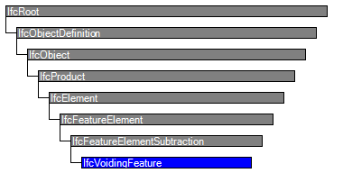

| Aussparung / Abzugskörper |
 | Voiding Feature |
| Item | SPF | XML | Change | Description | 4.0.0.0 |
|---|---|---|---|---|
| IfcVoidingFeature | ADDED | 4.0.1.0 | ||
| IfcVoidingFeature | ||||
| HasCoverings | ADDED |
A voiding feature is a modification of an element which reduces its volume. Such a feature may be manufactured in different ways, for example by cutting, drilling, or milling of members made of various materials, or by inlays into the formwork of cast members made of materials such as concrete.
The standard use of instances of IfcVoidingFeature is as a part of element type objects (instances of subtypes of IfcElementType). The part–whole relationship is established by an aggregation relationship object, expressing the decomposition of an element type into one or more additive elements (element parts) and zero or more feature elements.
HISTORY New entity in IFC4.
Containment Use Definition
Voiding features shall have no spatial containment relationship to the spatial structure since they are dependent on element types without spatial containment relationships or on an element occurrence with own spatial containment relationship.
| # | Attribute | Type | Cardinality | Description | R |
|---|---|---|---|---|---|
| 9 | PredefinedType | IfcVoidingFeatureTypeEnum | ? | Qualifies the feature regarding its shape and configuration relative to the voided element. | X |
| Rule | Description |
|---|---|
| HasObjectType | The attribute ObjectType shall be given if the predefined type is set to USERDEFINED. |

| # | Attribute | Type | Cardinality | Description | R |
|---|---|---|---|---|---|
| IfcRoot | |||||
| 1 | GlobalId | IfcGloballyUniqueId | Assignment of a globally unique identifier within the entire software world. | X | |
| 2 | OwnerHistory | IfcOwnerHistory | ? |
Assignment of the information about the current ownership of that object, including owning actor, application, local identification and information captured about the recent changes of the object,
NOTE only the last modification in stored - either as addition, deletion or modification. IFC4 CHANGE The attribute has been changed to be OPTIONAL. | X |
| 3 | Name | IfcLabel | ? | Optional name for use by the participating software systems or users. For some subtypes of IfcRoot the insertion of the Name attribute may be required. This would be enforced by a where rule. | X |
| 4 | Description | IfcText | ? | Optional description, provided for exchanging informative comments. | X |
| IfcObjectDefinition | |||||
| HasAssignments | IfcRelAssigns @RelatedObjects | S[0:?] | Reference to the relationship objects, that assign (by an association relationship) other subtypes of IfcObject to this object instance. Examples are the association to products, processes, controls, resources or groups. | X | |
| Nests | IfcRelNests @RelatedObjects | S[0:1] | References to the decomposition relationship being a nesting. It determines that this object definition is a part within an ordered whole/part decomposition relationship. An object occurrence or type can only be part of a single decomposition (to allow hierarchical strutures only).
IFC4 CHANGE The inverse attribute datatype has been added and separated from Decomposes defined at IfcObjectDefinition. | ||
| IsNestedBy | IfcRelNests @RelatingObject | S[0:?] | References to the decomposition relationship being a nesting. It determines that this object definition is the whole within an ordered whole/part decomposition relationship. An object or object type can be nested by several other objects (occurrences or types).
IFC4 CHANGE The inverse attribute datatype has been added and separated from IsDecomposedBy defined at IfcObjectDefinition. | X | |
| HasContext | IfcRelDeclares @RelatedDefinitions | S[0:1] | References to the context providing context information such as project unit or representation context. It should only be asserted for the uppermost non-spatial object.
IFC4 CHANGE The inverse attribute datatype has been added. | ||
| IsDecomposedBy | IfcRelAggregates @RelatingObject | S[0:?] | References to the decomposition relationship being an aggregation. It determines that this object definition is whole within an unordered whole/part decomposition relationship. An object definitions can be aggregated by several other objects (occurrences or parts).
IFC4 CHANGE The inverse attribute datatype has been changed from the supertype IfcRelDecomposes to subtype IfcRelAggregates. | X | |
| Decomposes | IfcRelAggregates @RelatedObjects | S[0:1] | References to the decomposition relationship being an aggregation. It determines that this object definition is a part within an unordered whole/part decomposition relationship. An object definitions can only be part of a single decomposition (to allow hierarchical strutures only).
IFC4 CHANGE The inverse attribute datatype has been changed from the supertype IfcRelDecomposes to subtype IfcRelAggregates. | X | |
| HasAssociations | IfcRelAssociates @RelatedObjects | S[0:?] | Reference to the relationship objects, that associates external references or other resource definitions to the object.. Examples are the association to library, documentation or classification. | X | |
| IfcObject | |||||
| 5 | ObjectType | IfcLabel | ? |
The type denotes a particular type that indicates the object further. The use has to be established at the level of instantiable subtypes. In particular it holds the user defined type, if the enumeration of the attribute PredefinedType is set to USERDEFINED.
| X |
| IsTypedBy | IfcRelDefinesByType @RelatedObjects | S[0:1] | Set of relationships to the object type that provides the type definitions for this object occurrence. The then associated IfcTypeObject, or its subtypes, contains the specific information (or type, or style), that is common to all instances of IfcObject, or its subtypes, referring to the same type.
IFC4 CHANGE New inverse relationship, the link to IfcRelDefinesByType had previously be included in the inverse relationship IfcRelDefines. Change made with upward compatibility for file based exchange. | X | |
| IsDefinedBy | IfcRelDefinesByProperties @RelatedObjects | S[0:?] | Set of relationships to property set definitions attached to this object. Those statically or dynamically defined properties contain alphanumeric information content that further defines the object.
IFC4 CHANGE The data type has been changed from IfcRelDefines to IfcRelDefinesByProperties with upward compatibility for file based exchange. | X | |
| IfcProduct | |||||
| 6 | ObjectPlacement | IfcObjectPlacement | ? | Placement of the product in space, the placement can either be absolute (relative to the world coordinate system), relative (relative to the object placement of another product), or constraint (e.g. relative to grid axes). It is determined by the various subtypes of IfcObjectPlacement, which includes the axis placement information to determine the transformation for the object coordinate system. | X |
| 7 | Representation | IfcProductRepresentation | ? | Reference to the representations of the product, being either a representation (IfcProductRepresentation) or as a special case a shape representations (IfcProductDefinitionShape). The product definition shape provides for multiple geometric representations of the shape property of the object within the same object coordinate system, defined by the object placement. | X |
| IfcElement | |||||
| 8 | Tag | IfcIdentifier | ? | The tag (or label) identifier at the particular instance of a product, e.g. the serial number, or the position number. It is the identifier at the occurrence level. | X |
| FillsVoids | IfcRelFillsElement @RelatedBuildingElement | S[0:1] | Reference to the IfcRelFillsElement Relationship that puts the element as a filling into the opening created within another element. | ||
| HasOpenings | IfcRelVoidsElement @RelatingBuildingElement | S[0:?] | Reference to the IfcRelVoidsElement relationship that creates an opening in an element. An element can incorporate zero-to-many openings. For each opening, that voids the element, a new relationship IfcRelVoidsElement is generated. | X | |
| ContainedInStructure | IfcRelContainedInSpatialStructure @RelatedElements | S[0:1] | Containment relationship to the spatial structure element, to which the element is primarily associated. This containment relationship has to be hierachical, i.e. an element may only be assigned directly to zero or one spatial structure. | X | |
| IfcFeatureElement | |||||
| IfcFeatureElementSubtraction | |||||
| VoidsElements | IfcRelVoidsElement @RelatedOpeningElement | Reference to the Voids Relationship that uses this Opening Element to create a void within an Element. The Opening Element can only be used to create a single void within a single Element. | |||
| IfcVoidingFeature | |||||
| 9 | PredefinedType | IfcVoidingFeatureTypeEnum | ? | Qualifies the feature regarding its shape and configuration relative to the voided element. | X |
Product Local Placement
The Product Local Placement concept template applies to this entity as shown in Table 338.
Table 338 — IfcVoidingFeature Product Local Placement |
Reference Geometry General
The Reference Geometry General concept applies to this entity.
Reference Tessellation Geometry
The Reference Tessellation Geometry concept applies to this entity.
Reference SweptSolid PolyCurve Geometry
The Reference SweptSolid PolyCurve Geometry concept applies to this entity.
Material Single
The Material Single concept (defined at a supertype) does NOT apply to this entity.
Element Decomposition
The Element Decomposition concept (defined at a supertype) does NOT apply to this entity.
Element Composition
The Element Composition concept (defined at a supertype) does NOT apply to this entity.
Spatial Containment
The Spatial Containment concept (defined at a supertype) does NOT apply to this entity.
Body SweptSolid PolyCurve Geometry
The Body SweptSolid PolyCurve Geometry concept (defined at a supertype) does NOT apply to this entity.
Mapped Geometry
The Mapped Geometry concept template applies to this entity as shown in Table 339.
Table 339 — IfcVoidingFeature Mapped Geometry |
Body Tessellation Geometry
The Body Tessellation Geometry concept (defined at a supertype) does NOT apply to this entity.
Body Geometry General
The Body Geometry General concept (defined at a supertype) does NOT apply to this entity.
Object Typing
The Object Typing concept (defined at a supertype) does NOT apply to this entity.
<?xml version="1.0"?>
<ConceptRoot xmlns:xsi="http://www.w3.org/2001/XMLSchema-instance" xmlns:xsd="http://www.w3.org/2001/XMLSchema" uuid="04a16035-7d76-4a2b-bf13-8b640826aaf6" name="IfcVoidingFeature" status="sample" applicableRootEntity="IfcVoidingFeature">
<Applicability uuid="00000000-0000-0000-0000-000000000000" status="sample">
<Template ref="771f7610-94b6-4054-8846-282157632b88" />
<TemplateRules operator="and" />
</Applicability>
<Concepts>
<Concept uuid="a02d874d-8938-40e4-88a5-6437f5b3ea9a" name="Product Local Placement" status="sample" override="false">
<Template ref="cbe85b5f-7912-4a43-8bb7-1e63bf40b26d" />
</Concept>
<Concept uuid="4c01096b-a442-4770-b791-8687d74857b6" name="Reference Geometry General" status="sample" override="false">
<Template ref="2a556af4-4b5b-43f8-833a-8a183800b19a" />
</Concept>
<Concept uuid="03f9d54b-dbce-4e4a-8380-5e2b4b9ed91f" name="Reference Tessellation Geometry" status="sample" override="false">
<Template ref="c10a7cd4-27e6-465f-a76e-da460daed660" />
</Concept>
<Concept uuid="7ddd732f-27d3-47a5-a61d-1aee0679c512" name="Reference SweptSolid PolyCurve Geometry" status="sample" override="false">
<Template ref="903ec934-3d30-4988-a9ab-21815fc634d7" />
</Concept>
<Concept uuid="5faaf604-e1f8-4000-ba86-a90f19bdd55b" name="Material Single" status="sample" override="false">
<Template ref="5f39a814-44a0-4fb3-8dc6-ddaa0560fc54" />
</Concept>
<Concept uuid="97a3d028-ca17-463c-815a-bd9c66a3ee1e" name="Element Decomposition" status="sample" override="false">
<Template ref="8a27c15a-c4ea-4ca9-8cce-7fbba1c9bce0" />
</Concept>
<Concept uuid="1ebaf541-61ab-446e-9ad1-790eb143c9ab" name="Element Composition" status="sample" override="false">
<Template ref="ca0f65e2-3913-4fdb-8a09-0c5c7a0d5421" />
</Concept>
<Concept uuid="db78604e-4394-4ea7-b2e3-9eff3ab40cd3" name="Spatial Containment" status="sample" override="false">
<Template ref="d9a3f822-0014-4bc2-8d94-9d9067759045" />
</Concept>
<Concept uuid="b2d2071e-f7ac-4f1e-8374-c54109756f87" name="Body SweptSolid PolyCurve Geometry" status="sample" override="false">
<Template ref="38710ccd-8ff5-41ba-8fda-08300907a02e" />
</Concept>
<Concept uuid="2b5bcd29-a465-4417-8212-7fbc0bb82ee8" name="Mapped Geometry" status="sample" override="false">
<Template ref="ecfdd7c8-71d5-449f-bf20-e63a25dcb9ba" />
</Concept>
<Concept uuid="77474e96-3fb6-4bc8-9c6e-628c62a4e094" name="Body Tessellation Geometry" status="sample" override="false">
<Template ref="5cfd4403-6545-4c6d-bc27-0a95a3d09950" />
</Concept>
<Concept uuid="886560cb-ddbd-4595-9f31-78b41ca5efa5" name="Body Geometry General" status="sample" override="false">
<Template ref="6656c33f-2ce2-43de-89d6-a7ee1262b1a0" />
</Concept>
<Concept uuid="302e9bb6-1932-4dfe-b58f-18c5f2fff1f5" name="Object Typing" status="sample" override="false">
<Template ref="35a2e10e-20df-40f4-ab2f-dacf0a6744f4" />
</Concept>
</Concepts>
</ConceptRoot>
<xs:element name="IfcVoidingFeature" type="ifc:IfcVoidingFeature" substitutionGroup="ifc:IfcFeatureElementSubtraction" nillable="true"/>
<xs:complexType name="IfcVoidingFeature">
<xs:complexContent>
<xs:extension base="ifc:IfcFeatureElementSubtraction">
<xs:attribute name="PredefinedType" type="ifc:IfcVoidingFeatureTypeEnum" use="optional"/>
</xs:extension>
</xs:complexContent>
</xs:complexType>
ENTITY IfcVoidingFeature
SUBTYPE OF (IfcFeatureElementSubtraction);
PredefinedType : OPTIONAL IfcVoidingFeatureTypeEnum;
WHERE
HasObjectType : NOT EXISTS(PredefinedType) OR (PredefinedType <> IfcVoidingFeatureTypeEnum.USERDEFINED) OR EXISTS(SELF\IfcObject.ObjectType);
END_ENTITY;
 Instance diagram
Instance diagram Link to this page
Link to this page